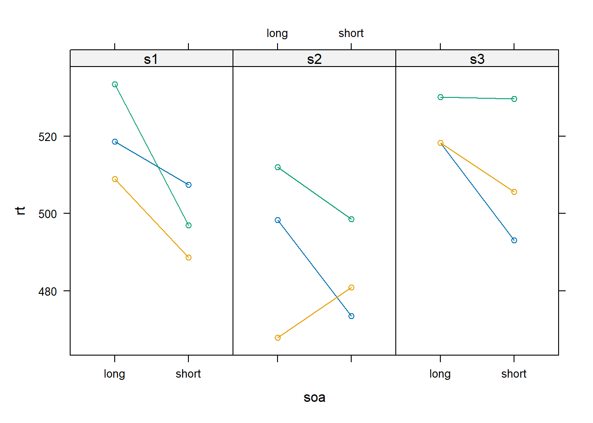

Chapter 7 Crossed random effects
7.2 Exercises
Exercise 1
Change the data simulation by Baayen et al. (2008) for \(N = 30\) subjects instead of only 3
You can use the following script and adjust it accordingly
You can choose if you want to use model matrices or create the vectors “manually”
Code
library(lattice)
library(lme4)
#--------------- (1) Create data frame ---------------
datsim <- expand.grid(subject = factor(c("s1" , "s2" , "s3" )),
item = factor(c("w1" , "w2" , "w3" )),
soa = factor(c("long" , "short" )))
datsim <- datsim |> sort_by(~ subject)
#--------------- (2) Define parameters ---------------
beta0 <- 522.11
beta1 <- -18.89
sw <- 21.1
sy0 <- 23.89
sy1 <- 9
ry <- -1
se <- 9.9
#--------------- (3) Create vectors and simulate data ---------------
# Fixed effects
b0 <- rep(beta0, 18)
b1 <- rep(rep(c(0, beta1), each = 3), 3)
# Draw random effects
w <- rep(rnorm(3, mean = 0, sd = sw), 6)
e <- rnorm(18, mean = 0, sd = se)
# Bivariate normal distribution
sig <- matrix(c(sy0^2, ry * sy0 * sy1, ry * sy0 * sy1, sy1^2), 2, 2)
y01 <- mvtnorm::rmvnorm(3, mean = c(0, 0), sigma = sig)
y0 <- rep(y01[,1], each = 6)
y1 <- rep(c(0, y01[1,2],
0, y01[2,2],
0, y01[3,2]), each = 3)
datsim$rt <- b0 + b1 + w + y0 + y1 + e
#--------------- (4) Simulate data using model matrices ---------------
X <- model.matrix( ~ soa, datsim)
Z <- model.matrix( ~ 0 + item + subject + subject:soa, datsim,
contrasts.arg = list(subject = contrasts(datsim$subject,
contrasts = FALSE)))
# Fixed effects
beta <- c(beta0, beta1)
# Random effects
u <- c(w = unique(w),
y0 = y01[,1],
y1 = y01[,2])
datsim$rt2 <- X %*% beta + Z %*% u + e
#--------------- (5) Visualize simulated data ---------------
xyplot(rt ~ soa | subject, datsim, group = item, type = "b", layout = c(3, 1))
Code
n <- 30
datsim <- expand.grid(subject = factor(paste0("s", 1:n)),
item = factor(c("w1" , "w2" , "w3" )),
soa = factor(c("long" , "short" )))
datsim <- datsim |> sort_by(~ subject)
beta0 <- 522.11
beta1 <- -18.89
sw <- 21.1
sy0 <- 23.89
sy1 <- 9
ry <- -1
se <- 9.9
w <- rnorm(3, mean = 0, sd = sw)
e <- rnorm(n * 6, mean = 0, sd = se)
# Bivariate normal distribution
sig <- matrix(c(sy0^2, ry * sy0 * sy1, ry * sy0 * sy1, sy1^2), 2, 2)
y01 <- mvtnorm::rmvnorm(n, mean = c(0, 0), sigma = sig)
beta <- c(beta0, beta1)
# Random effects
u <- c(w = w,
y0 = y01[,1],
y1 = y01[,2])
X <- model.matrix( ~ soa, datsim)
Z <- model.matrix( ~ 0 + item + subject + subject:soa, datsim,
contrasts.arg = list(subject = contrasts(datsim$subject,
contrasts = FALSE)))
datsim$rt <- X %*% beta + Z %*% u + e
xyplot(rt ~ soa | subject, datsim, group = item, type = "b", layout=c(5, 6))Exercise 2
- Fit the following models to the healing data by Aungle & Langer (2023)
Code
load("data/healing.RData")
dat <- DFmodel
m1 <- lmer(Healing ~ Condition + (1 | Subject) + (1 | ResponseId), dat)
m2 <- lmer(Healing ~ Condition + (Condition | Subject) + (1 | ResponseId), dat)
m3 <- lmer(Healing ~ Condition + (1 | Subject) +
(0 + dummy(Condition, "28") | Subject) +
(0 + dummy(Condition, "56") | Subject) +
(1 | ResponseId), dat)
m4 <- lmer(Healing ~ Condition + (Condition | Subject) + (Condition | ResponseId), dat)Profile the models with
profile(<model>)Use the functions
xyplot(),densityplot(),splom()from the lattice package to take a closer look at the estimated random parametersCompare the three models with likelihood ratio tests
What is the best model in your opinion?
Code
pm1 <- profile(m1)
pm2 <- profile(m2)
pm3 <- profile(m3)
xyplot(pm1, which = "theta_")Code
xyplot(pm2, which = "theta_")Code
xyplot(pm2, which = "theta_")Code
densityplot(pm1, which = "theta_")Code
densityplot(pm2, which = "theta_")Code
densityplot(pm3, which = "theta_")Code
splom(pm1, which = "theta_")Code
splom(pm2, which = "theta_")Code
splom(pm3, which = "theta_")Code
anova(m1, m3, m2)References
Aungle, P. & Langer, E. (2023). Physical healing as a function of perceived time. Scientific Reports, 13(1), 22432. https://doi.org/10.1038/s41598-023-50009-3
Baayen, R. H., Davidson, D. J. & Bates, D. M. (2008). Mixed-effects modeling with crossed random effects for subjects and items. Journal of Memory and Language, 59(4), 390–412. https://doi.org/10.1016/j.jml.2007.12.005